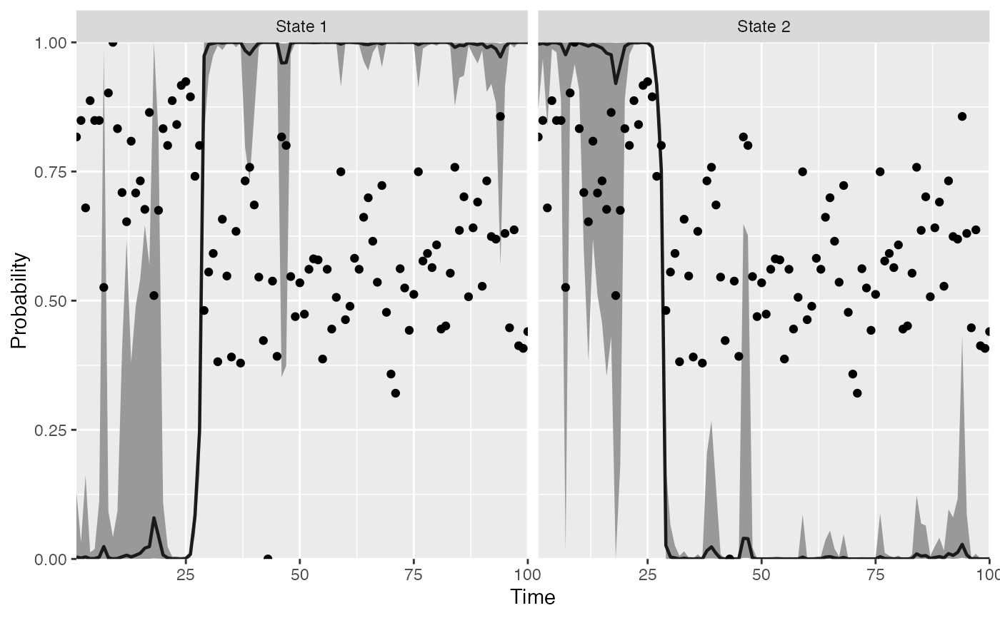
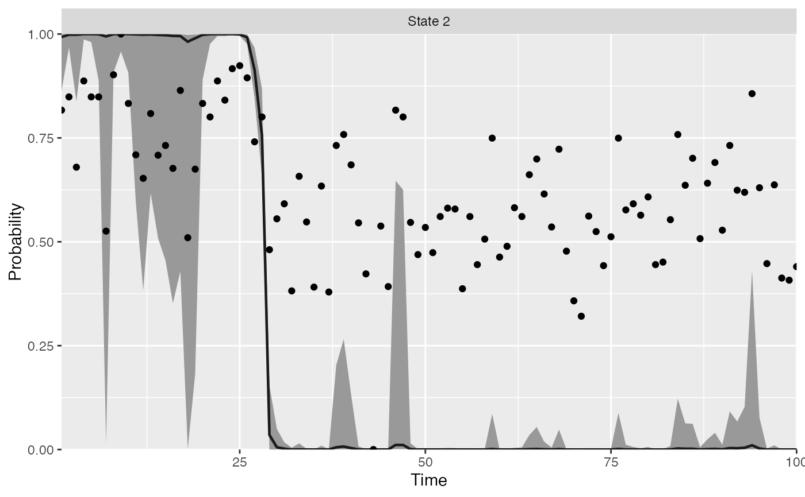
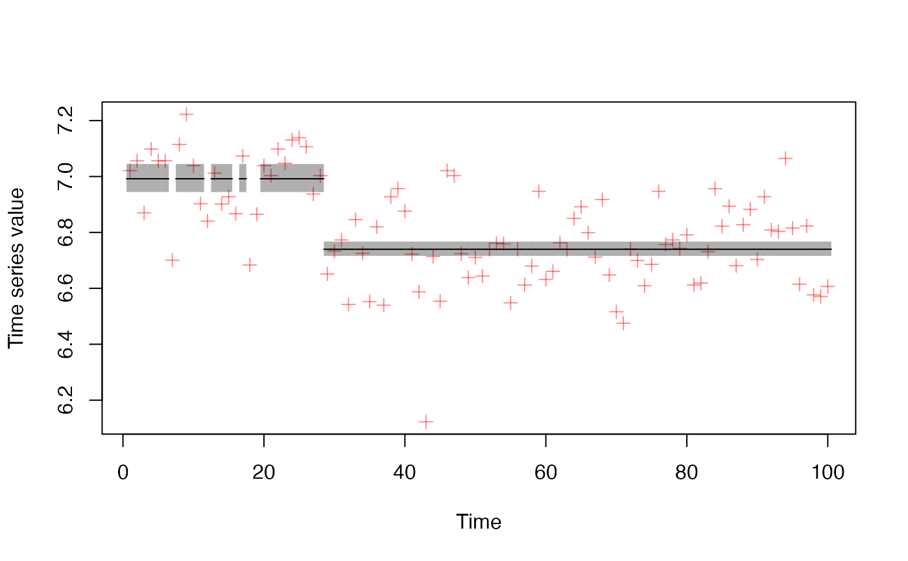

Plot the state probabilities from find_regimes()
plot_regime_model( model, probs = c(0.05, 0.95), type = c("probability", "means"), regime_prob_threshold = 0.9, plot_prob_indices = NULL, flip_regimes = FALSE )
| model | A model returned by |
|---|---|
| probs | A numeric vector of quantiles to plot the credible intervals at.
Defaults to |
| type | Whether to plot the probabilities (default) or means. |
| regime_prob_threshold | The probability density that must be above 0.5.
Defaults to 0.9 before we classify a regime (only affects |
| plot_prob_indices | Optional indices of probability plots to plot. Defaults to showing all. |
| flip_regimes | Optional whether to flip regimes in plots, defaults to FALSE |
Note that the original timeseries data (dots) are shown scaled between 0 and 1.
#> #> SAMPLING FOR MODEL 'hmm_gaussian' NOW (CHAIN 1). #> Chain 1: #> Chain 1: Gradient evaluation took 6.5e-05 seconds #> Chain 1: 1000 transitions using 10 leapfrog steps per transition would take 0.65 seconds. #> Chain 1: Adjust your expectations accordingly! #> Chain 1: #> Chain 1: #> Chain 1: WARNING: There aren't enough warmup iterations to fit the #> Chain 1: three stages of adaptation as currently configured. #> Chain 1: Reducing each adaptation stage to 15%/75%/10% of #> Chain 1: the given number of warmup iterations: #> Chain 1: init_buffer = 3 #> Chain 1: adapt_window = 20 #> Chain 1: term_buffer = 2 #> Chain 1: #> Chain 1: Iteration: 1 / 50 [ 2%] (Warmup) #> Chain 1: Iteration: 5 / 50 [ 10%] (Warmup) #> Chain 1: Iteration: 10 / 50 [ 20%] (Warmup) #> Chain 1: Iteration: 15 / 50 [ 30%] (Warmup) #> Chain 1: Iteration: 20 / 50 [ 40%] (Warmup) #> Chain 1: Iteration: 25 / 50 [ 50%] (Warmup) #> Chain 1: Iteration: 26 / 50 [ 52%] (Sampling) #> Chain 1: Iteration: 30 / 50 [ 60%] (Sampling) #> Chain 1: Iteration: 35 / 50 [ 70%] (Sampling) #> Chain 1: Iteration: 40 / 50 [ 80%] (Sampling) #> Chain 1: Iteration: 45 / 50 [ 90%] (Sampling) #> Chain 1: Iteration: 50 / 50 [100%] (Sampling) #> Chain 1: #> Chain 1: Elapsed Time: 0.173353 seconds (Warm-up) #> Chain 1: 0.2053 seconds (Sampling) #> Chain 1: 0.378653 seconds (Total) #> Chain 1:#> Warning: The largest R-hat is NA, indicating chains have not mixed. #> Running the chains for more iterations may help. See #> http://mc-stan.org/misc/warnings.html#r-hat#> Warning: Bulk Effective Samples Size (ESS) is too low, indicating posterior means and medians may be unreliable. #> Running the chains for more iterations may help. See #> http://mc-stan.org/misc/warnings.html#bulk-ess#> Warning: Tail Effective Samples Size (ESS) is too low, indicating posterior variances and tail quantiles may be unreliable. #> Running the chains for more iterations may help. See #> http://mc-stan.org/misc/warnings.html#tail-ess#> Warning: Some Pareto k diagnostic values are too high. See help('pareto-k-diagnostic') for details.plot_regime_model(m)plot_regime_model(m, type = "means")# }